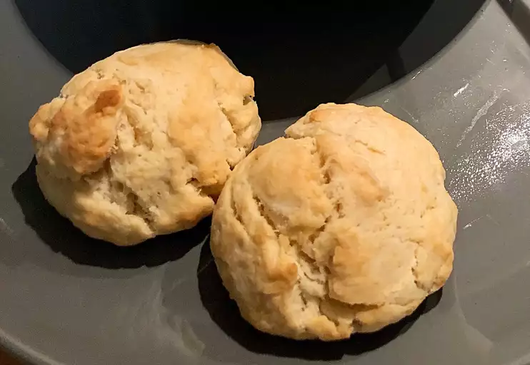

Vegan Buttery Drop Biscuits

Description
You wouldn't believe that these moist, buttery biscuits are vegan!
Ingredients
1 cup all-purpose flour
1 1/2 tablespoons white sugar
1/4 teaspoon salt
1/2 cup coconut milk
1/4 cup vegan butter